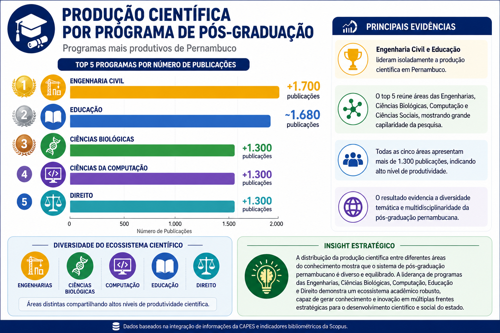
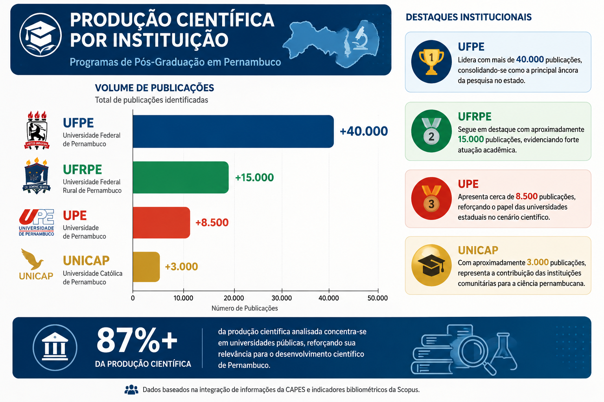
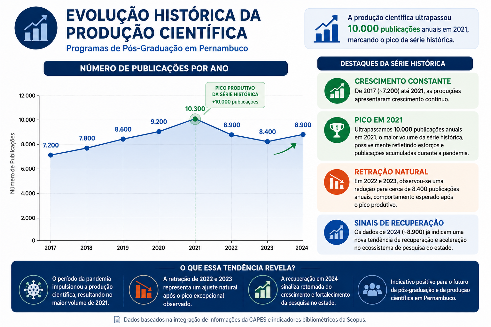

Uma iniciativa voltada à análise da produção científica, impacto acadêmico e indicadores da pós-graduação stricto sensu em Pernambuco, fundamentada nos princípios da Gestão do Conhecimento e das Comunidades de Prática.
Explorar DashboardO Observatório CAPES Pernambuco busca transformar dados acadêmicos em conhecimento compartilhado, integrando informações da CAPES e indicadores bibliométricos da Scopus. A iniciativa permite analisar a produção científica dos Programas de Pós-Graduação (PPGs) do estado, identificando tendências, impactos e padrões de publicação.
Apesar da disponibilidade crescente de dados sobre produção científica e avaliação da pós-graduação, a interpretação integrada desses indicadores ainda representa um desafio para pesquisadores e gestores. O projeto investiga como a combinação de indicadores bibliométricos e dados institucionais pode apoiar a geração de conhecimento sobre o desempenho da pós-graduação pernambucana.
Coleta rigorosa dos dados provenientes da Plataforma Sucupira.
Enriquecimento das bases com indicadores bibliométricos globais.
Representação semântica avançada utilizando o padrão CTI-PE.
Consulta, filtro e recuperação eficiente das informações estruturadas.
Construção de indicadores científicos estratégicos para tomada de decisão.
Dashboard interativo projetado para a exploração clara dos dados.
A Comunidade de Prática constitui um ambiente colaborativo de alto impacto, voltado ao compartilhamento de experiências, interpretações e conhecimentos relacionados à produção científica e avaliação da pós-graduação. A proposta busca promover aprendizagem coletiva e construção de conhecimento embasada em evidências sólidas.
Participe das nossas discussões em tempo real! Conecte-se com outros pesquisadores e cientistas de dados, troque ideias sobre a ontologia do projeto, compartilhe scripts e contribua para a construção de conhecimento da nossa Comunidade de Prática.
Acessar o ServidorCom base na coleta de dados institucionais, apresentamos o panorama da pesquisa no estado. A integração visual nos permite compreender não apenas o volume produtivo das instituições, mas também a distribuição de esforços por áreas do conhecimento e o ritmo temporal de publicações dos pesquisadores locais.

Interpretação: O gráfico demonstra que as áreas de Engenharia Civil (+1.700 publicações) e Educação (~1.680) lideram isoladamente o volume de produção científica em Pernambuco. O top 5 é completado por Ciências Biológicas, Ciências da Computação e Direito.

Interpretação: A análise confirma a UFPE como a grande âncora da pesquisa no estado, despontando com mais de 40.000 publicações. Segue-se a UFRPE (~15.000) e as universidades estaduais e comunitárias, como a UPE e a UNICAP.

Interpretação: A série histórica revela um crescimento constante desde 2017, alcançando um pico produtivo em 2021 (+10.000 publicações). Os dados preliminares de 2024 já sinalizam uma tendência de forte recuperação no ecossistema.